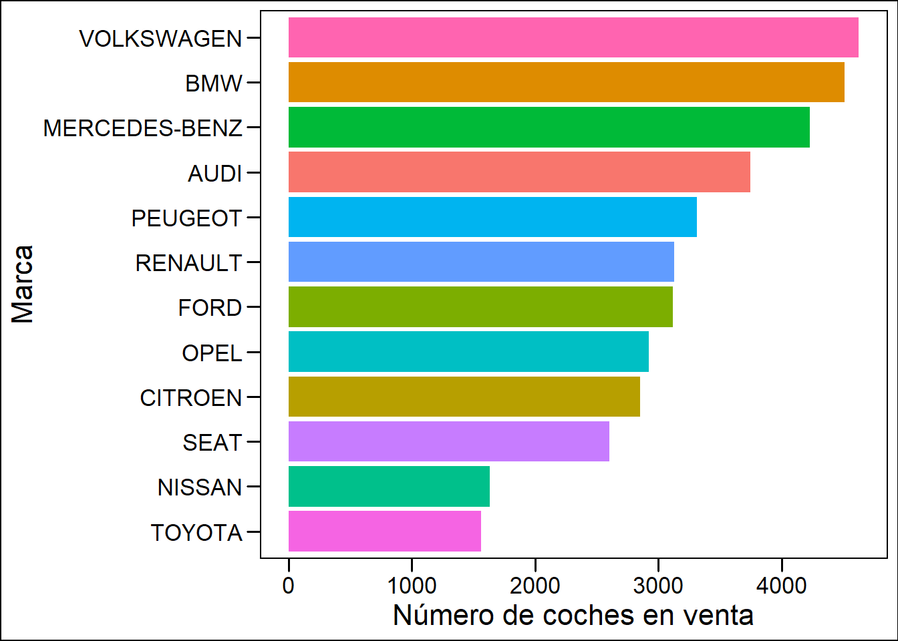
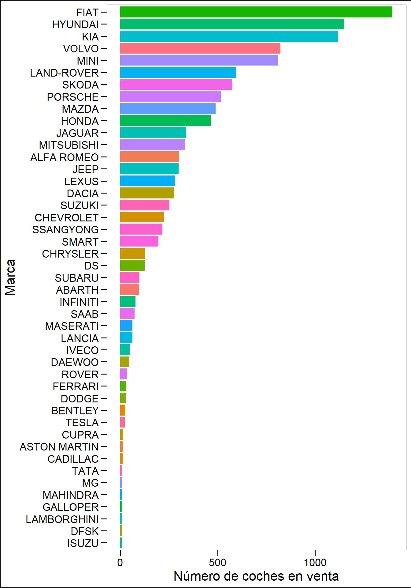
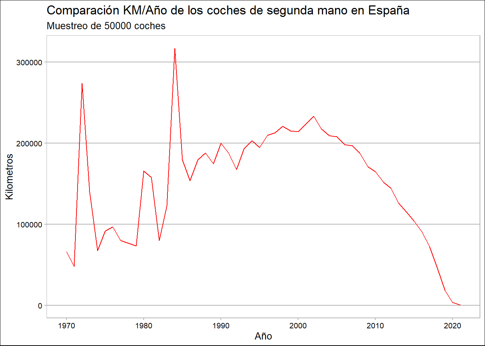

Viendo como esta la situación del mercado en España y las CC.AA
trabajo BigData
Coches
Mercado de segunda mano
Autor/a
Rubén Rodríguez Giménez (rurogi@uv.es)
Fecha de publicación
26 de diciembre de 2022
Introducción
Hace un año, me compré mi primer coche de segunda mano.
Me costó mucho encontrar un coche decente dentro del mercado, todos tenian algún problema el cual no era informado o era saboteado como los kilometros para así que sea mas atractivo.
Después de cuatro meses buscando encontré lo que busacaba y a día de hoy estoy contento con mi compra.
Esta situacion me ha hecho reflexionar y me ha ayudado a decidirme por coger este DataSet y analizar el mercado, dentro de lo posible, de como está la situación en España y en las diferentes CC.AA. con una muestra de 50.000 coches de la página de ventas de segunda mano, Wallapop.
Paquetes y datos usados
Para descargar y manipular los datos he optado por la siguiente lista de paquetes, la mayoría usados en las clases de este curso:
Para el tema de los datos, he usado unos datos de la página KAGGLE concretamente, este DATASET
Dichos datos contienen informacion de 50.000 coches de la página de WALLAPOP. Entre ellos, el tipo de coche,la marca, el precio, el modelo y los kilometros, entre otros.
Marcas en venta
Existen muchas marcas de coches en venta, mas de las que me imagianaba. El siguiente grafico nos muestra la cantidad de coches que hay en venta de cada marca en España.
Grafico_masMarcas <-ggplot(masMarcas) +aes(x =reorder(Marca,n), y = n, fill = Marca) +geom_col() +scale_fill_hue(direction =1) + ggthemes::theme_base() +theme(legend.position ="none") +coord_flip() +labs(x ="Marca", y ="Número de coches en venta")Grafico_masMarcas

Es curiosos como dentro de las 5 primeras marcas mas vendidas se encuentran coches como Mercedes, BMW o Audi, coches de gama alta y que no son muy accesibles a la clase de gente que busca cohces de segunda mano.
Las marcas menos anunciadas son estas:
Código
Grafico_menMarcas <-ggplot(menMarcas) +aes(x =reorder(Marca,n), y = n, fill = Marca) +geom_col() +scale_fill_hue(direction =1) + ggthemes::theme_base() +theme(legend.position ="none") +coord_flip() +labs(x ="Marca", y ="Número de coches en venta")Grafico_menMarcas

Como se oberva hay marcas que no se venden practicamente nada, al tratarse de marcas exclusivas de otros paises y han tenido que ser importados.
Cantidad de coches anunciados
A continuación, voy a representar en un mapa la cantidad de coches anunciados en las diferentes provincias.
Los principales nucleos de venta de coches son, como era de esperar, las provincías mas pobladas, como son Madrid en primer lugar, Barcelona, Valencia, Sevilla y Málaga.
Madrid es con diferencía la provincía con mas coches en venta. Algunas de las razones son las siguientes.
Tamaño de la población: Madrid es la capital y la ciudad más grande de España, por lo que es lógico que tenga una mayor demanda de coches de segunda mano debido a su gran población.
Mayor número de compradores potenciales: Debido a la gran población de Madrid, también es más probable que haya un mayor número de compradores potenciales en la ciudad, lo que aumenta la demanda de coches de segunda mano.
Mayor oferta de coches de segunda mano: Debido a la gran población y al elevado tráfico de coches en Madrid, es más probable que haya una mayor oferta de coches de segunda mano disponibles para la venta en la ciudad.
Mayor concentración de concesionarios y distribuidores: Es posible que haya una mayor concentración de concesionarios y distribuidores de coches de segunda mano en Madrid, lo que puede contribuir a la mayor cantidad de ventas en la ciudad.
Mayor actividad económica: Madrid es un importante centro económico en España, lo que puede contribuir a una mayor demanda de coches de segunda mano debido a la mayor cantidad de personas que pueden permitirse comprar un coche.
Precios de los coches
El siguiente grafico nos muestra la media del precio de los coches dsitrubidos por provincias.
La provincía con el precio medio mas alto sería Burgos, seguidas de ciudades como Barcelona, Girona, Madrid y Valencia entre las demás.
Ciudades mas rurales como pueden ser Huelva, Ciudad Real, Caceres, Guadalajara se encuentran el posicinoes bajas del gráfico. Y las que menos precio medio presentan son las ciudades autonomas de Ceuta y Melilla.
Comparación de los kilometros con los años del coche
Por último, vamos a comparar los kilometros que lleva el coche, con los años que tiene. Existe una particularidad que se puede observar en el siguiente gráfico.
Código
KM_año <- coches %>%select("Año", "Kilometros") %>%group_by(Año) %>%summarise(Media =mean(Kilometros)) %>%filter(!is.na(Año))%>%mutate(Media =as.integer(round(Media)))Grafico_KM_año <-ggplot(KM_año) +aes(x = Año, y = Media) +geom_line(size =0.5, colour ="#FF0000") +labs(x ="Año",y ="Kilometros",title ="Comparación KM/Año de los coches de segunda mano en España",subtitle ="Muestreo de 50000 coches " ) + ggthemes::theme_calc() Grafico_KM_año

Como se oberva, hasta los 2000 aproximadamente es raro como contra mas años poseé el vehículo. La verdad que no entiendo las razones excatas de que por que sucede esto. Puede ser que por que antiguamente, no había las estructuras de carreteras que hay hoy en dia, por lo que no se conducia tanto, o por que son coches tan antiguos que estan muy bien cuidados como forma de artículo coleccionable o algo por estilo.
Conclusiones
El mercado de coches de segunda mano en España es bastante activo y tiene una gran demanda. Hay una gran variedad de coches de segunda mano disponibles para la venta, desde coches de lujo y deportivos hasta coches más económicos y familiares.
Hay muchas formas de comprar coches de segunda mano en España, como a través de concesionarios de coches de segunda mano, distribuidores independientes, particulares o a través de plataformas en línea. También es común ver anuncios de coches de segunda mano en periódicos y revistas especializadas, así como en carteles y anuncios en la calle.
En general, el mercado de coches de segunda mano en España es muy competitivo y es posible encontrar buenas ofertas y descuentos si se busca en el lugar adecuado. Sin embargo, es importante hacer una revisión adecuada del coche antes de comprarlo y asegurarse de que se está obteniendo un buen trato. También es recomendable comparar precios y hacer una investigación adecuada antes de tomar una decisión de compra.
Información sobre la sesión
Abajo muestro mi entorno de trabajo y paquetes utilizados
---title: "El mercado de coches de segunda mano"description: | Viendo como esta la situación del mercado en España y las CC.AAauthor: Rubén Rodríguez Giménez (rurogi@uv.es) #--date: 2022-12-26 #--categories: [trabajo BigData, Coches, Mercado de segunda mano] #--image: "./imagenes/imagen_01.png"title-block-banner: "#A9957B" #- {true, false, "green","#AA0000"}title-block-banner-color: "white" #-"#FFFFFF" toc: truetoc-location: lefttoc-depth: 3smooth-scroll: trueformat: html: #backgroundcolor: "#fff6e6" #standalone: true link-external-newwindow: true #css: ./assets/my_css_file.css #- CUIDADO!!!!code-tools: truecode-link: true---## IntroducciónHace un año, me compré mi primer coche de segunda mano. Me costó mucho encontrar un coche decente dentro del mercado, todos tenian algún problema el cual no era informado o era saboteado como los kilometros para así que sea mas atractivo.Después de cuatro meses buscando encontré lo que busacaba y a día de hoy estoy contento con mi compra.Esta situacion me ha hecho reflexionar y me ha ayudado a decidirme por coger este DataSet y analizar el mercado, dentro de lo posible, de como está la situación en España y en las diferentes CC.AA. con una muestra de 50.000 coches de la página de ventas de segunda mano, Wallapop.## Paquetes y datos usadosPara descargar y manipular los datos he optado por la siguiente lista de paquetes, la mayoría usados en las clases de este curso:```{r}library(tidyverse) #install.packages("tidyverse")library(sf) #install.packages("sf")library(DT) #install.packages("DT")library(ggThemeAssist) #install.packages("ggThemeAssist")library(patchwork) #install.packages("patchwork")library(plotly) #-install.packages("plotly")library(knitr) #install.packages("plotly")library(tibble) #install.packages("tibble")library(ggthemes) #install.packages("ggthemes)library(gifski) #install.packages("gifski")library(gt) #install.packages("gt")library(kableExtra) #install.packages("kableExtra")library(maps) #install.packages("maps")```Para el tema de los datos, he usado unos datos de la página [KAGGLE](https://www.kaggle.com/) concretamente, este [DATASET](https://www.kaggle.com/datasets/datamarket/venta-de-coches)Dichos datos contienen informacion de 50.000 coches de la página de [WALLAPOP](https://es.wallapop.com/). Entre ellos, el tipo de coche,la marca, el precio, el modelo y los kilometros, entre otros.## Marcas en ventaExisten muchas marcas de coches en venta, mas de las que me imagianaba. El siguiente grafico nos muestra la cantidad de coches que hay en venta de cada marca en España.```{r}options(scipen=999)coches <- rio::import("./datos/coches.csv")coches <- coches %>%mutate(Marca = make) %>%mutate(Modelo = model) %>%mutate(Precio = price) %>%mutate(Combustible = fuel) %>%mutate(Año = year) %>%mutate(Kilometros = kms) %>%mutate(Profesional = is_professional) %>%mutate(Provincia = province) %>%select("Marca", "Modelo", "Precio", "Combustible", "Año", "Kilometros", "Profesional", "Provincia") coches$Profesional <-as.character(coches$Profesional)Marcas <- coches %>%count(Marca) %>%arrange(desc(n))masMarcas <- Marcas %>%filter(n >1500)menMarcas <- Marcas %>%filter(n <1500) %>%filter(n >5)```Las marcas mas anunciadas son las siguientes:```{r}Grafico_masMarcas <-ggplot(masMarcas) +aes(x =reorder(Marca,n), y = n, fill = Marca) +geom_col() +scale_fill_hue(direction =1) + ggthemes::theme_base() +theme(legend.position ="none") +coord_flip() +labs(x ="Marca", y ="Número de coches en venta")Grafico_masMarcas```Es curiosos como dentro de las 5 primeras marcas mas vendidas se encuentran coches como Mercedes, BMW o Audi, coches de gama alta y que no son muy accesibles a la clase de gente que busca cohces de segunda mano.<br>Las marcas menos anunciadas son estas:```{r, fig.height=10}Grafico_menMarcas <-ggplot(menMarcas) +aes(x =reorder(Marca,n), y = n, fill = Marca) +geom_col() +scale_fill_hue(direction =1) + ggthemes::theme_base() +theme(legend.position ="none") +coord_flip() +labs(x ="Marca", y ="Número de coches en venta")Grafico_menMarcas```Como se oberva hay marcas que no se venden practicamente nada, al tratarse de marcas exclusivas de otros paises y han tenido que ser importados.## Cantidad de coches anunciadosA continuación, voy a representar en un mapa la cantidad de coches anunciados en las diferentes provincias.```{r}Provincias <- coches %>%count(Provincia) %>%arrange(desc(n))Provincias <- Provincias[1:52,]españamun <-read_sf("./shapefiles", "mun")españamun <- españamun %>%select("NAMEUNIT", "geometry") %>%mutate(Provincia =case_when(NAMEUNIT =="Alacant/Alicante"~"Alicante", NAMEUNIT =="Araba/Álava"~"Álava", NAMEUNIT =="Castelló/Castellón"~"Castellón", NAMEUNIT =="València/Valencia"~"Valencia", NAMEUNIT =="Gipuzkoa"~"Guipúzcoa", NAMEUNIT =="Bizkaia"~"Vizcaya", NAMEUNIT =="Illes Balears"~"Baleares", NAMEUNIT =="Ourense"~"Orense",TRUE~ NAMEUNIT)) %>%select("Provincia", "geometry")españamun <-as_tibble(españamun)Provincias <-full_join(Provincias, españamun, by ="Provincia" )azul_fuerte <-"#0c32f2"azul_medio <-"#6e86ff"azul <-"#c7f9ff"paleta <-colorRampPalette(c(azul, azul_medio , azul_fuerte))colores_mapa <-paleta(10)theme_custom_map <-function(base_size =11,base_family ="",base_line_size = base_size /22,base_rect_size = base_size /22) {theme_bw(base_size = base_size, base_family = base_family,base_line_size = base_line_size) %+replace%theme(axis.title =element_blank(), axis.text =element_blank(),axis.ticks =element_blank(),complete =TRUE )}MAPAESPAÑA <-ggplot(data = Provincias) +geom_sf(aes(fill= n, geometry = geometry)) +labs(fill ="COCHES ANUNCIADOS") +scale_fill_gradientn(colours = colores_mapa) +theme_custom_map() +theme(axis.text =element_text(size =1)) +labs(title ="MAPA DE COCHES DE SEGUNDA MANO ANUNCIADOS EN ESPAÑA")MAPAESPAÑA```Los principales nucleos de venta de coches son, como era de esperar, las provincías mas pobladas, como son Madrid en primer lugar, Barcelona, Valencia, Sevilla y Málaga.Madrid es con diferencía la provincía con mas coches en venta. Algunas de las razones son las siguientes.- **Tamaño de la población**: Madrid es la capital y la ciudad más grande de España, por lo que es lógico que tenga una mayor demanda de coches de segunda mano debido a su gran población.- **Mayor número de compradores potenciales**: Debido a la gran población de Madrid, también es más probable que haya un mayor número de compradores potenciales en la ciudad, lo que aumenta la demanda de coches de segunda mano.- **Mayor oferta de coches de segunda mano**: Debido a la gran población y al elevado tráfico de coches en Madrid, es más probable que haya una mayor oferta de coches de segunda mano disponibles para la venta en la ciudad.- **Mayor concentración de concesionarios y distribuidores**: Es posible que haya una mayor concentración de concesionarios y distribuidores de coches de segunda mano en Madrid, lo que puede contribuir a la mayor cantidad de ventas en la ciudad.- **Mayor actividad económica**: Madrid es un importante centro económico en España, lo que puede contribuir a una mayor demanda de coches de segunda mano debido a la mayor cantidad de personas que pueden permitirse comprar un coche.## Precios de los cochesEl siguiente grafico nos muestra la media del precio de los coches dsitrubidos por provincias.```{r,fig.height=8}Prov_pre <- coches %>%select("Provincia", "Precio") %>%arrange(Provincia)Prov_pre <- Prov_pre[7:50000,]Precio_medio <- Prov_pre %>%group_by(Provincia) %>%summarise(Media =mean(Precio)) %>%ungroup()Grafico_Precio_medio <-ggplot(Precio_medio) +aes(x =reorder(Provincia,Media), y = Media, fill = Provincia) +geom_col() +scale_fill_hue(direction =1) +coord_flip() + ggthemes::theme_pander() +theme(legend.position ="none")+labs(x ="Provincias", y ="Precio Medio")Grafico_Precio_medio```La provincía con el precio medio mas alto sería Burgos, seguidas de ciudades como Barcelona, Girona, Madrid y Valencia entre las demás.Ciudades mas rurales como pueden ser Huelva, Ciudad Real, Caceres, Guadalajara se encuentran el posicinoes bajas del gráfico. Y las que menos precio medio presentan son las ciudades autonomas de Ceuta y Melilla.## Comparación de los kilometros con los años del coche Por último, vamos a comparar los kilometros que lleva el coche, con los años que tiene. Existe una particularidad que se puede observar en el siguiente gráfico.```{r}KM_año <- coches %>%select("Año", "Kilometros") %>%group_by(Año) %>%summarise(Media =mean(Kilometros)) %>%filter(!is.na(Año))%>%mutate(Media =as.integer(round(Media)))Grafico_KM_año <-ggplot(KM_año) +aes(x = Año, y = Media) +geom_line(size =0.5, colour ="#FF0000") +labs(x ="Año",y ="Kilometros",title ="Comparación KM/Año de los coches de segunda mano en España",subtitle ="Muestreo de 50000 coches " ) + ggthemes::theme_calc() Grafico_KM_año```Como se oberva, hasta los 2000 aproximadamente es raro como contra mas años poseé el vehículo. La verdad que no entiendo las razones excatas de que por que sucede esto. Puede ser que por que antiguamente, no había las estructuras de carreteras que hay hoy en dia, por lo que no se conducia tanto, o por que son coches tan antiguos que estan muy bien cuidados como forma de artículo coleccionable o algo por estilo.## ConclusionesEl mercado de coches de segunda mano en España es bastante activo y tiene una gran demanda. Hay una gran variedad de coches de segunda mano disponibles para la venta, desde coches de lujo y deportivos hasta coches más económicos y familiares.Hay muchas formas de comprar coches de segunda mano en España, como a través de concesionarios de coches de segunda mano, distribuidores independientes, particulares o a través de plataformas en línea. También es común ver anuncios de coches de segunda mano en periódicos y revistas especializadas, así como en carteles y anuncios en la calle.En general, el mercado de coches de segunda mano en España es muy competitivo y es posible encontrar buenas ofertas y descuentos si se busca en el lugar adecuado. Sin embargo, es importante hacer una revisión adecuada del coche antes de comprarlo y asegurarse de que se está obteniendo un buen trato. También es recomendable comparar precios y hacer una investigación adecuada antes de tomar una decisión de compra.## Información sobre la sesiónAbajo muestro mi entorno de trabajo y paquetes utilizados```{r}#| echo: falsesessioninfo::session_info() %>% details::details(summary ='current session info') ```